Práctica: Acceso remoto a Windows Server en AWS Academy¶
Objetivos¶
Durante esta práctica aprenderás a crear y configurar una instancia de Windows Server en AWS Academy y acceder a ella mediante Escritorio Remoto (RDP). El objetivo es familiarizarte con la computación en la nube, la creación de máquinas virtuales en AWS y la configuración de acceso remoto mediante RDP.
Al finalizar esta práctica serás capaz de:
- Comprender los conceptos básicos de computación en la nube y los tipos de servicios (IaaS, PaaS, SaaS).
- Utilizar AWS Academy para crear y gestionar instancias de Windows Server.
- Configurar una instancia de Windows Server 2025 en AWS EC2.
- Configurar grupos de seguridad para permitir el acceso RDP.
- Acceder remotamente a Windows Server mediante RDP (Remote Desktop Protocol).
- Documentar el proceso completo de configuración y acceso remoto.
Requisitos previos¶
Antes de comenzar, asegúrate de tener:
- Acceso a AWS Academy a través de Canvas o la plataforma educativa proporcionada por tu centro.
- Cuenta de estudiante activa en AWS Academy Learner Lab.
- Cliente RDP instalado en tu máquina local:
- Windows: Escritorio Remoto (incluido por defecto)
- macOS: Microsoft Remote Desktop (descarga desde App Store)
- Linux: Remmina, Vinagre o
rdesktop - Navegador web actualizado (Chrome, Firefox, Edge, Safari).
- Conexión a Internet estable.
Nota importante
AWS Academy Learner Lab proporciona créditos limitados y tiempo de uso restringido. Asegúrate de detener las instancias cuando no las uses para no consumir créditos innecesariamente.
Tareas a realizar¶
- Configuración de AWS Academy:
- Accede a AWS Academy a través de Canvas.
- Inicia el laboratorio AWS Academy Learner Lab.
- Creación de instancia Windows Server:
- Crea una instancia de Windows Server 2025 en EC2.
- Configura el tipo de instancia, Lanzamiento y red.
- Crea y configura un grupo de seguridad que permita RDP.
- Configuración de acceso remoto:
- Obtén la contraseña del administrador usando la clave privada.
- Configura el cliente RDP en tu máquina local.
- Conecta mediante RDP a la instancia de Windows Server.
- Verificación del acceso:
- Verifica que puedes acceder al escritorio de Windows Server.
- Comprueba la conectividad de red.
- Verifica que el escritorio remoto está habilitado.
- Documentación:
- Crea un documento que explique:
- El proceso de creación de instancias en AWS EC2.
- La configuración de grupos de seguridad y acceso RDP.
- Los pasos realizados para la configuración.
- Capturas de pantalla que demuestren el funcionamiento.
- Problemas encontrados y soluciones aplicadas.
Entregables¶
Para la entrega de esta práctica, deberás proporcionar:
- Documentación:
- Documento en Markdown con:
- Pasos seguidos para la configuración de AWS Academy.
- Proceso de creación de la instancia Windows Server.
- Configuración de grupos de seguridad y acceso RDP.
- Capturas de pantalla del proceso completo.
- Comandos utilizados y su explicación.
- Verificación del funcionamiento del acceso remoto.
- Evidencias:
- Las capturas de pantalla deben mostrar:
- Acceso a AWS Academy y inicio del laboratorio.
- Creación de la instancia Windows Server en EC2.
- Configuración del grupo de seguridad.
- Obtención de la contraseña del administrador.
- Conexión RDP exitosa al escritorio de Windows Server.
- Verificación del acceso remoto y conectividad.
Introducción¶
¿Qué es el Cloud Computing?¶
El Cloud Computing (computación en la nube) se define como la entrega de servicios, plataformas, aplicaciones y otros procesos a través de Internet mediante un modelo de pago por uso.
Beneficios de la informática en la nube:
- Agilidad: Permite implementar recursos rápidamente.
- Elasticidad: Escala recursos según la demanda.
- Ahorro de costos: Solo pagas por lo que usas.
- Implementación global: Despliega aplicaciones a nivel mundial en minutos.
Tipos de informática en la nube:
- IaaS (Infrastructure as a Service): Infraestructura como servicio (ej: EC2, máquinas virtuales).
- PaaS (Platform as a Service): Plataforma como servicio (ej: servicios de desarrollo).
- SaaS (Software as a Service): Software como servicio (ej: aplicaciones web).
AWS Academy¶
AWS Academy es una plataforma educativa que proporciona acceso a recursos de AWS para estudiantes y educadores. A través de AWS Academy Learner Lab, los estudiantes pueden crear y gestionar recursos de AWS en un entorno controlado y con créditos educativos.
En esta práctica utilizaremos AWS Academy para crear una instancia de Windows Server 2025 y acceder a ella mediante RDP.
Escritorio Remoto (RDP)¶
RDP (Remote Desktop Protocol) es un protocolo propietario desarrollado por Microsoft que permite el acceso remoto a escritorios y aplicaciones en sistemas Windows. Utiliza el puerto 3389 por defecto y proporciona una experiencia de escritorio remoto completa.
Paso 0: Acceso a AWS Academy¶
1. Registro en AWS Academy¶
Si has recibido una invitación por correo electrónico para participar en una clase de AWS Academy:
- Abre el correo electrónico de invitación de AWS Academy.
- Haz clic en el enlace para registrarte en Canvas (si no tienes cuenta) o inicia sesión si ya tienes una.
- Completa el registro proporcionando:
- Login (nombre de usuario)
- Password (contraseña)
- Time Zone (zona horaria, por ejemplo: Madrid +01:00/+02:00)
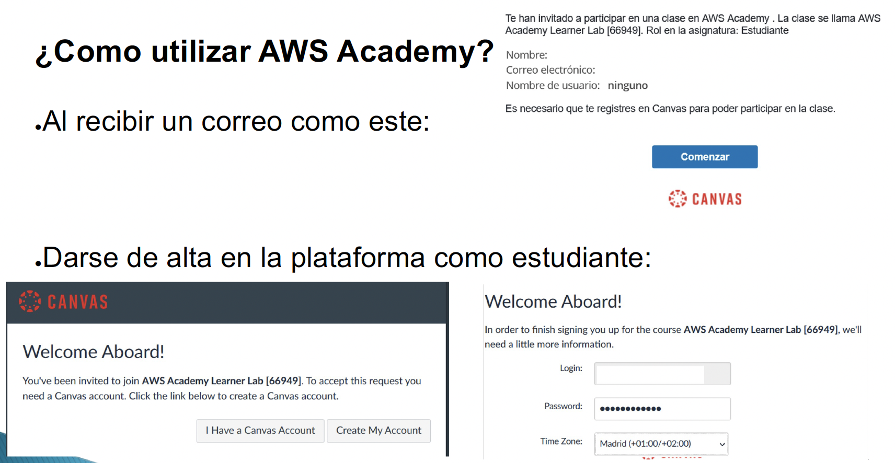
2. Acceso al laboratorio¶
Una vez registrado:
- Accede a Canvas y entra en el curso "AWS Academy Learner Lab".
- Navega a Contenidos y busca el módulo "Lanzamiento del Laboratorio para el alumnado de AWS Academy".
- Haz clic en "Lanzamiento del Laboratorio".
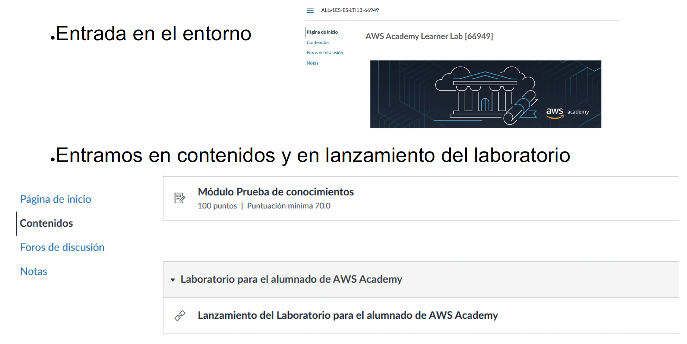
3. Iniciar el laboratorio¶
- Acepta las condiciones del laboratorio si aparece algún aviso.
- Haz clic en "Start Lab" para iniciar el laboratorio.
- Espera a que el estado cambie a verde (normalmente tarda 1-2 minutos).
- Haz clic en "AWS" para acceder a la consola de AWS.
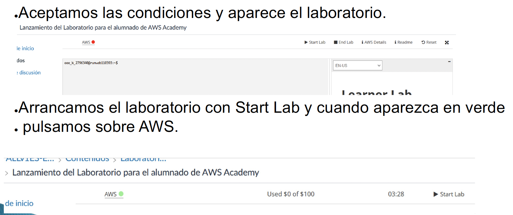
Importante
El laboratorio tiene un tiempo limitado (normalmente 4 horas). Cuando termine, deberás iniciarlo de nuevo. Los recursos creados se eliminarán automáticamente al finalizar el laboratorio.
Paso 1: Crear una instancia de Windows Server¶
1. Acceder a EC2¶
Una vez en la consola de AWS:
- Busca "EC2" en la barra de búsqueda de servicios.
- Haz clic en "EC2" para acceder al servicio de Elastic Compute Cloud.
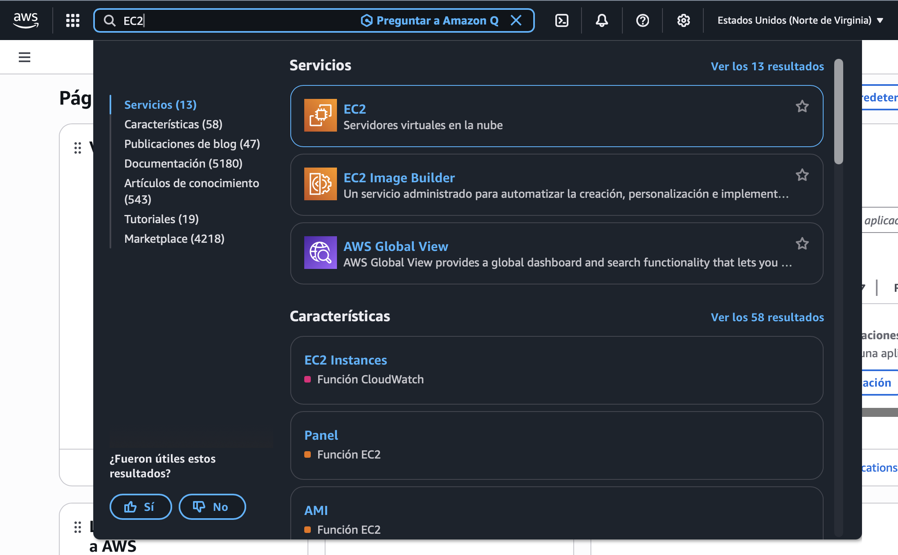
2. Lanzar una instancia¶
- En el panel de EC2, haz clic en "Instancias" en el menú lateral.
- Haz clic en "Lanzar instancia" (Launch instance).
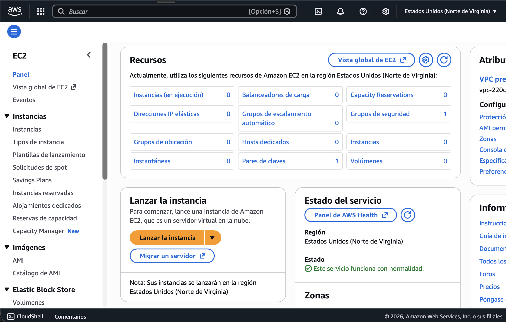
3. Configurar la instancia¶
Sigue estos pasos para configurar la instancia:
3.1. Nombre de la instancia¶
- En el campo "Nombre", introduce un nombre descriptivo, por ejemplo:
Servidor Windows 2025.
3.2. Seleccionar la AMI (Imagen)¶
- En "Imagen de aplicación y sistema operativo (AMI)", busca y selecciona "Windows Server 2025 Base".
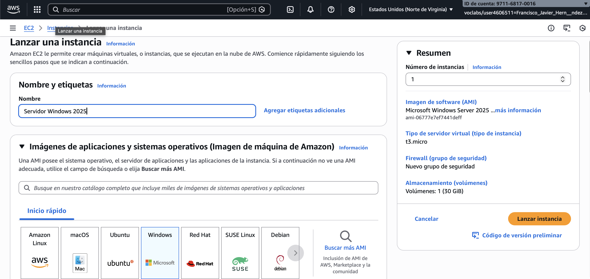
3.3. Tipo de instancia¶
- En "Tipo de instancia", selecciona t3.large:
- 2 vCPU
- 8 GiB de memoria RAM
- Adecuado para prácticas y pruebas
Nota sobre tipos de instancia
- t3.micro: 1 vCPU, 1 GiB RAM - Gratis en plan gratuito, pero puede ser lento para Windows Server.
- t3.small: 1 vCPU, 2 GiB RAM - Mínimo recomendado para Windows Server.
- t3.medium: 2 vCPU, 4 GiB RAM - Adecuado para pruebas básicas.
- t3.large: 2 vCPU, 8 GiB RAM - Recomendado para prácticas (el que usaremos).
3.4. Par de claves¶
- En "Par de claves (inicio de sesión)", selecciona un par de claves existente o crea uno nuevo.
- Si usas la clave por defecto "vockey", puedes utilizarla.
- Si prefieres crear una nueva:
- Haz clic en "Crear un nuevo par de claves"
- Introduce un nombre (ej:
estudiante2) - Descarga la clave privada (.pem) y guárdala en un lugar seguro
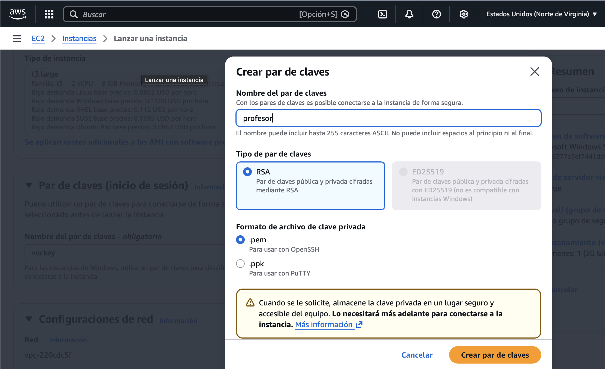
Importante para Windows
Para instancias de Windows, el par de claves se utiliza para descifrar la contraseña del administrador. Necesitarás la clave privada (.pem) para obtener la contraseña inicial de Windows.
3.5. Configuración de red¶
- Haz clic en "Editar" en la sección "Configuraciones de red".
- En "Subred", selecciona una subred disponible (por ejemplo, la primera de la lista).
- Asegúrate de que "Asignar dirección IP pública" esté habilitado.
3.6. Grupo de seguridad¶
- En "Grupo de seguridad", crea un nuevo grupo de seguridad:
- Nombre:
SeguridadServidor(o el que prefieras) - Descripción: "Grupo de seguridad para servidor Windows con RDP"
- Añade reglas de entrada:
- RDP (3389): Permite el acceso desde tu IP o desde cualquier lugar (0.0.0.0/0) para pruebas.
- Permitir tráfico desde la red privada: Añade una regla que permita el acceso entrante desde el rango de IPs de tu red privada (por ejemplo,
10.0.0.0/16o el bloque CIDR que utiliza tu VPC/AWS).
Mejores prácticas de seguridad
En producción, nunca deberías permitir RDP desde 0.0.0.0/0 (cualquier IP). En su lugar:
- Permite RDP solo desde tu IP específica.
- O utiliza una VPN o bastion host.
- Para prácticas educativas, puedes usar
0.0.0.0/0temporalmente.
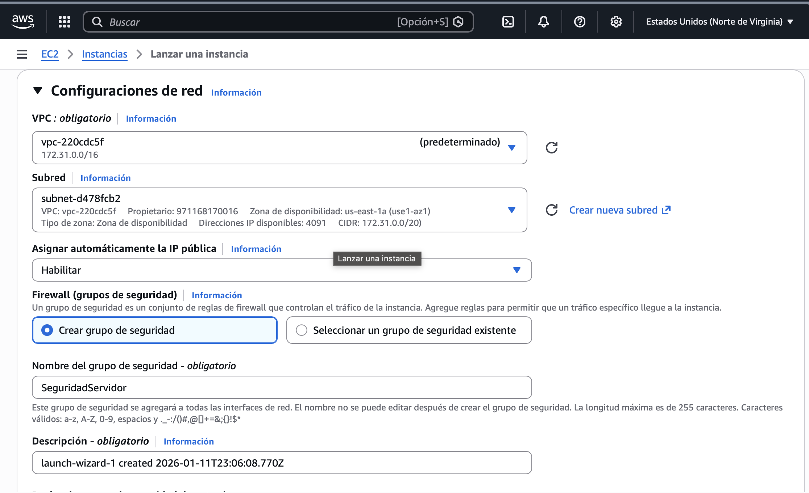
3.7. Almacenamiento¶
- En "Configurar Almacenamiento", configura:
- Tamaño: 40 GiB (mínimo recomendado para Windows Server)
- Tipo de volumen: gp3 (SSD de propósito general)
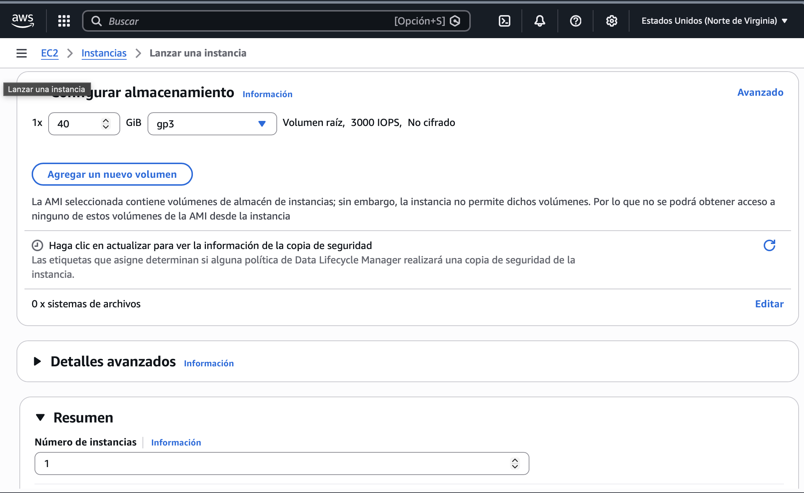
4. Lanzar la instancia¶
- Revisa la configuración en el resumen a la derecha.
- Haz clic en "Lanzar instancia" (Launch instance).
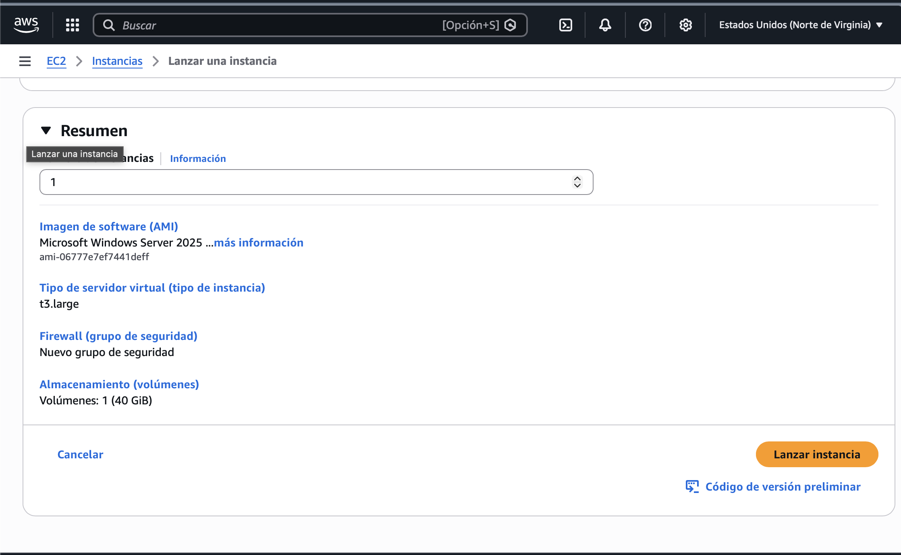
- Verás un mensaje de confirmación: "El lanzamiento de la instancia se inició correctamente".
- Haz clic en "Ver todas las instancias" para ver el estado de tu instancia.
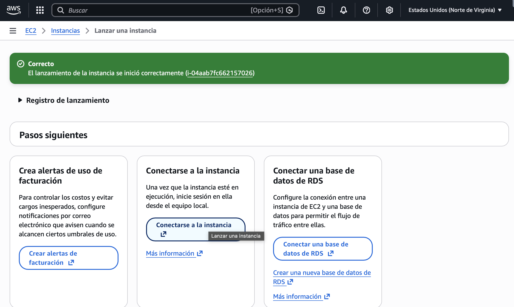
Paso 2: Obtener la contraseña de Windows¶
1. Esperar a que la instancia esté en ejecución¶
- En la lista de instancias, espera a que el "Estado de la instancia" cambie a "En ejecución" (Running).
- Esto puede tardar 2-5 minutos.
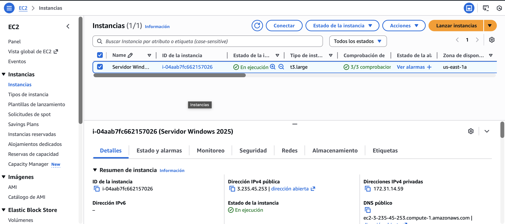
2. Obtener la contraseña del administrador¶
- Selecciona la instancia haciendo clic en la casilla de verificación.
- Haz clic en "Conectar" (Connect) en la parte superior.
- En la pestaña "RDP client", verás las instrucciones para obtener la contraseña.
- Haz clic en "Obtener contraseña" (Get password).
- Sube el archivo de clave privada (.pem) que descargaste al crear el par de claves.
- Haz clic en "Descifrar contraseña" (Decrypt password).
- Copia la contraseña y guárdala en un lugar seguro. También anota el nombre de usuario (normalmente
Administrator).
Importante
La contraseña solo se muestra una vez. Si la pierdes, tendrás que crear una nueva instancia o restablecer la contraseña.
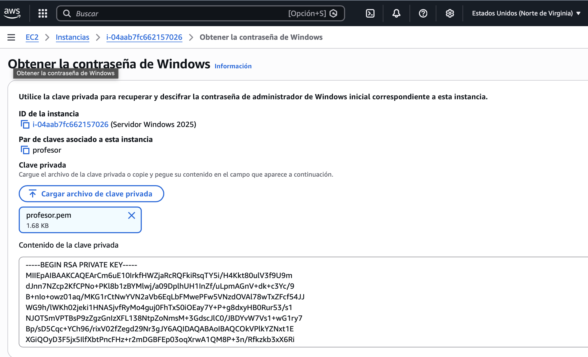
Paso 3: Conectar mediante RDP¶
1. Obtener archivo de escritorio remoto¶
- En la lista de instancias, selecciona tu instancia.
- Haz clic en el botón "Conectar" en la parte superior.
- En la pestaña "Cliente RDP", haz clic en "Descargar archivo de escritorio remoto".
- Se descargará un archivo
.rdppreconfigurado con la IP pública y los datos de conexión. - Haz doble clic en el archivo descargado para abrirlo con la aplicación de Escritorio Remoto.
- Cuando se solicite, introduce el usuario (
Administrator) y la contraseña obtenida en el paso anterior.
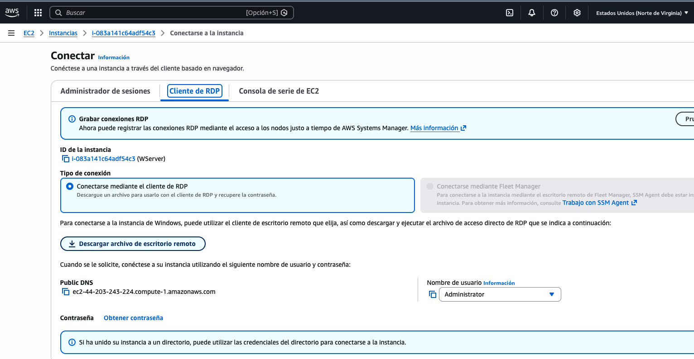
Importante
El archivo .rdp deberá descargarse de nuevo cada vez que cambie la IP pública de la instancia. Si la instancia se detiene y arranca nuevamente, la IP pública puede variar, por lo que el archivo anterior dejará de funcionar.
2. Conectar desde Windows¶
Si estás en un equipo Windows:
- Abre "Escritorio Remoto":
- Presiona
Windows + R - Escribe
mstscy presiona Enter - O busca "Escritorio Remoto" en el menú Inicio
-
Introduce la IP pública de la instancia.
-
Haz clic en "Conectar".
-
Cuando se solicite:
- Usuario:
Administrator - Contraseña: La contraseña que obtuviste en el Paso 2
- Acepta la advertencia de certificado si aparece.
3. Conectar desde macOS¶
Si estás en un equipo macOS:
-
Descarga Microsoft Remote Desktop desde la App Store (gratis).
-
Abre Microsoft Remote Desktop.
-
Haz clic en "Add PC" o el botón "+".
-
Configura la conexión:
- PC name: La IP pública de la instancia
- User account:
Administrator - Password: La contraseña obtenida
- Haz doble clic en la conexión para conectarte.
4. Conectar desde Linux¶
Si estás en un equipo Linux:
Opción A: Usando Remmina (GUI)
# Instalar Remmina
sudo apt update
sudo apt install remmina remmina-plugin-rdp -y
# Abrir Remmina
remmina
- Haz clic en el botón "+" para crear una nueva conexión.
- Configura:
- Protocol: RDP
- Server: IP pública de la instancia
- Username:
Administrator - Password: La contraseña obtenida 3. Guarda y conecta.
Opción B: Usando rdesktop (línea de comandos)
# Instalar rdesktop
sudo apt install rdesktop -y
# Conectar
rdesktop -u Administrator -p 'TU_CONTRASEÑA' IP_PUBLICA
Paso 4: Verificar el acceso remoto¶
Una vez conectado mediante RDP, deberías ver el escritorio de Windows Server 2025.
Verificaciones básicas¶
- Verifica que estás conectado:
- Deberías ver el escritorio de Windows Server 2025.
- El usuario debería ser
Administrator.
- Verifica la conectividad de red:
- Abre el Símbolo del sistema (CMD) o PowerShell.
- Ejecuta
ipconfigpara ver la configuración de red. - Ejecuta
ping 8.8.8.8para verificar conectividad a Internet.
- Verifica el acceso remoto: - Abre "Configuración" → "Sistema" → "Escritorio remoto". - Verifica que el escritorio remoto esté habilitado.
Paso 5: Detener y terminar instancias¶
Detener una instancia (para ahorrar créditos)¶
Cuando no uses la instancia, puedes detenerla (no eliminarla):
- Selecciona la instancia en la consola de EC2.
- Haz clic en "Detener instancia" (Stop instance).
- La instancia se detendrá pero no se eliminará.
- Puedes reiniciarla más tarde con "Iniciar instancia" (Start instance).
Nota importante
- Detener una instancia: No consume créditos de computación, pero sí de Lanzamiento (EBS).
- Terminar una instancia: Elimina la instancia y todos sus datos. No se puede recuperar.
Terminar una instancia (eliminar permanentemente)¶
Si quieres eliminar permanentemente la instancia:
- Selecciona la instancia.
- Haz clic en "Terminar instancia" (Terminate instance).
- Confirma la eliminación.
Advertencia
Al terminar una instancia, se eliminan todos los datos y no se puede recuperar. Asegúrate de haber guardado todo lo importante antes de terminar.